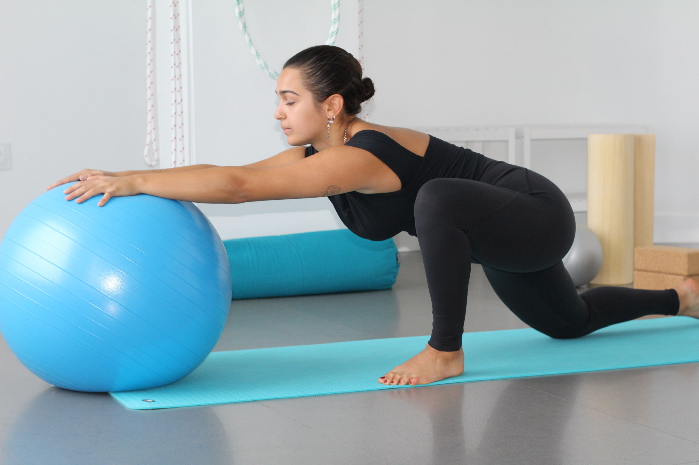
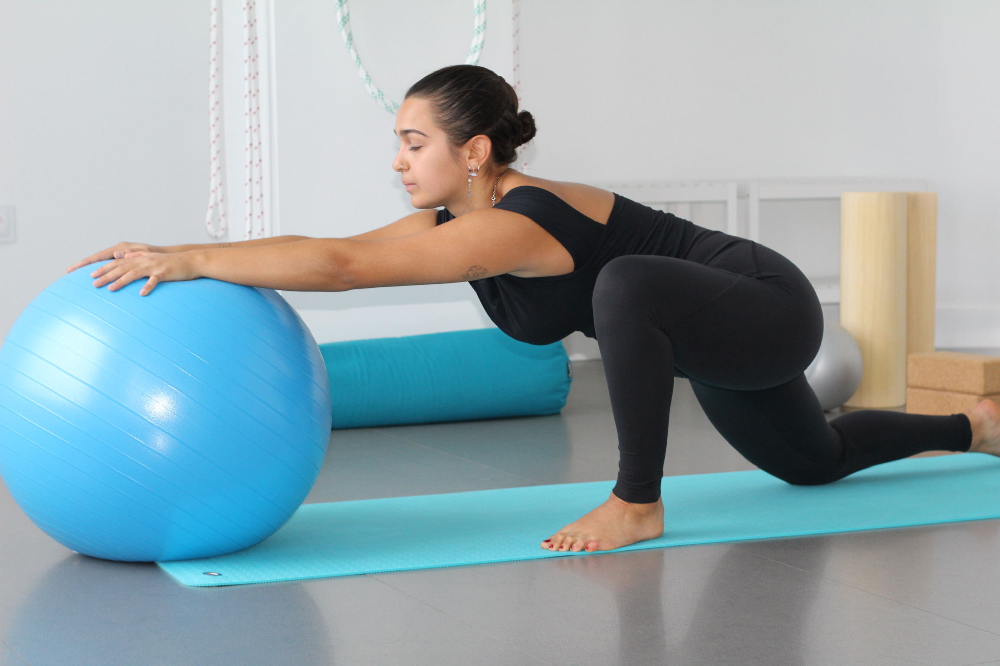

Conoce a Marta Infante
Tu instructora, tu guía y tu acompañante en esta aventura
Hola, soy Marta Infante, tu instructora de yoga y guía en este viaje de autodescubrimiento. Con una pasión por el bienestar holístico, te invito a unirte a mí para explorar el poder transformador del yoga. Vamos a emprender un camino hacia el equilibrio, la armonía y la paz interior.
Cuento con una licenciatura en fisioterapia y he practicado yoga durante muchos años. Mi experiencia combinada en fisioterapia y yoga me permite ofrecerte un enfoque integral para mejorar tu salud y bienestar. A través de mis clases, te guiaré en la incorporación de prácticas de yoga para fortalecer tanto tu cuerpo como tu mente.
Descubre el equilibrio físico y mental, encuentra paz interior y mejora tu calidad de vida a través de la práctica regular del yoga. Estoy emocionada de compartir contigo esta increíble travesía hacia el bienestar y la autenticidad.
 
